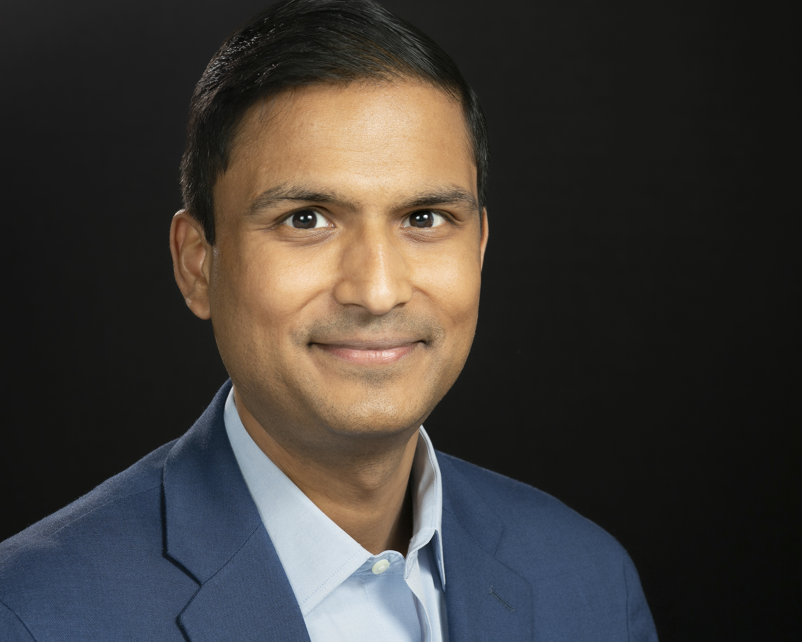

The advisor who ships. Advising Fortune 500 enterprises and federal agencies on AI-era security — and building the working systems that prove what's possible.
I'm a Field CISO and AI Security Executive at Google Cloud, advising CISOs and boards on AI governance, SecOps transformation, and sovereign AI strategy. Previously at Palo Alto Networks as Business Value Director, and Accenture and KPMG as a strategy consultant.
My background spans deep engineering, management consulting, and enterprise security GTM: MS Electrical Engineering, University of Michigan (research in secure vehicular communications) · MBA, University of Chicago Booth (Dean's Honor List) · 9 years at Ericsson architecting hybrid cloud and IoT security infrastructure.
In 2026 I moved from advising on AI to building with it: working systems for the problems my customers actually face — agentic workflow automation under enterprise constraints, retrieval for regulated environments, end-to-end fine-tuning infrastructure, and AI-native security for disconnected networks. I speak at Billington CyberSecurity, GovExec, and ATARC, and write on what it takes to build genuinely AI-native security programs.

Every system here starts with a problem enterprises actually have — and a constraint they actually face: enterprise OAuth boundaries, regulated-data retrieval, sovereign deployment, zero network egress. Designed, built, and shipped end-to-end.
Original analysis on AI-era threats, autonomous attack surfaces, and what it means to build genuinely AI-native security programs.
Public sector CISOs are sitting on decades-old infrastructure — and AI expects to run on top of it. A roadmap from securing executive alignment to continuous defense and AI governance.
Federal cybersecurity forums, AI security summits, and government technology conferences. Speaking at the intersection of AI, Zero Trust, and enterprise security modernization.
Long-form analysis on technology's impact on emerging economies, energy transitions, and social systems. Data-driven, independently written, intentionally contrarian where the evidence demands it.
Security executive who builds — exploring what happens when deep domain expertise meets hands-on engineering.
Particularly interested in conversations around enterprise AI security, agentic AI risk, retrieval and fine-tuning for regulated environments, and bringing AI-native security to disconnected and sovereign networks.
If you're building in these spaces, advising enterprises on AI adoption, or just want to compare notes on what you're seeing in the field — reach out.